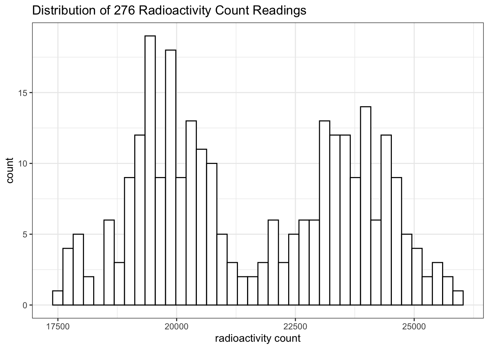

1 Aim of the Practical
2 Background
Q1
Draw a simple schematic diagram of an IgG molecule, labelling the relevant chains and domains.
Diagram see Figure 2.1
Figure 2.1: Schematic of an IgG molecule.
- What is meant by a polyclonal antibody?
- A mixture of antibodies with diifferent Fv regions (antigen-binding sites) that are complementary to different epitopes (on the same antigen)
- What is a monoclonal antibody?
- A group of clone of a single antibody, with identical Fv region and bind to the same epitope.
- Detail the steps by which mouse monoclonal antibodies are raised.
- When the antigen molecules are injected (probably with an adjunvant e.g. Aluminium salt to elicit immune response more effectively), they activate antigen-presenting cells (APCs) called dendritic cells. Activated dendritic cells then use their MHC class II to present antigens on their plasma membrane, while migrating to the lymphatic system. When they encounter B cells and Th (T helper) cells with cognate BCR/TCRs in lymph nodes, they activate these B and T cells. With the help from activated dendritic cells and Th cells, B cells undergoes monoclonal expansion, class switching and somatic hypermutation, and differentiate into plasma cells, which produce a large number of antibodies in a short period.
3 Introduction to Radioimmunoassay
Q2
18 tubes are set up for radioimmunoassay containing antibody with a capacity for binding 1µg antigen. Both labelled antigen and a known concentration of unlabelled antigen are added to the tube as indicated. Note that the labelled antigen has been conjugated with 125I so that approx 50,000 cpm are associated with every \(\mu\text{g}\) of labelled antigen). Fill in the table below giving values rounded to the nearest integer.
| 0 | 0.5 | 1 | 2 | 4 | 8 | |
|---|---|---|---|---|---|---|
| 0.5 | 25000 | 25000 | 16667 | 10000 | 5556 | 2941 |
| 1.0 | 50000 | 33333 | 25000 | 16666 | 10000 | 5556 |
| 2.0 | 50000 | 40000 | 33333 | 25000 | 16667 | 10000 |
When the antibodies are saturated with antigens (when the amount of total antigen is greater than \(1 \mu\text{g}\)), the radioactivity is the proportion of labelled antigen multiplied by the maximal radioactivity (50000 cpm). There is one case (0 \(\mu\text{g}\) unlabelled; 0.5 \(\mu\text{g}\) labelled) where the antibodies are not saturated.
Q3
Use the data from Q2 to draw curves of counts precipitated versus amount of unlabelled antigen added at each concentration of labelled antigen.
There are two ways to plot it. The obvious way is to directly plot the radioactivity count against the amount of unlabelled antigen (Figure 3.1 A). However, by simply taking the reciprocal of the radioactivity count, a linear relationship can be obtained (Figure 3.1 B). This is explained in more detail in Q4.
# Loading data
d <- tibble(labelled = rep(c('0.5 microgram', '1 microgram', '2 microgram'), each = 6),
unlabelled = rep(c(0, 0.5, 1, 2, 4, 8), 3),
count = c(25000, 25000, 16667, 10000, 5556, 2941,
50000, 33333, 25000, 16666, 10000, 5556,
50000, 40000, 33333, 25000, 16667, 10000))
# Direct plot
direct <- ggplot(d, aes(unlabelled, count, linetype = labelled))+
geom_line()+
labs(title='Direct Plotting')
# Plot after transformation
linear <- ggplot(d, aes(unlabelled, 10000/count, linetype = labelled))+
geom_line()+
labs(title="Tranformed to Linear Relationship")
# Arrangement
ggarrange(direct, linear, ncol=2, nrow=1, common.legend = TRUE, legend="bottom", labels = c("A", "B"))Figure 3.1: A: direct plotting; B: plotting the reciprocal of radioactivity count against unlabelled antigen amount.
Q4
Explain why these curves have a negative slope.
When antibodies are saturated with antigens, this simple relationship holds:
\[y=\dfrac{k}{x+k}\times A\]
where \(k\) is the amount of labelled antigen (constant), \(x\) is the amount of unlabelled antigen, \(A\) is the maximal radioactivity count (when \(x=0\) and all antibodies are bound to labelled antigens). In other words, the proportion of labelled antigen (relative to the total amount of antigen that saturates the antibodies) equals the ratio between the actual radioactivity and the maximal radioactivity. Thus, according to this equation, plotting radioactivity against amount of unlabelled antigen will result in a negative slope.
Taking the reciprocal results in a linear relationship between \(\dfrac{1}{y}\) and \(x\), and this was used to plot Q3 and later the calibration curve.
\[\dfrac{1}{y}=\dfrac{x}{Ak} + A\]
Q5
From the data in Q3 and Q4 and your graph, identify the range of counts precipitated that would be useful for calibration (i.e. that will give you a significant change in counts precipitated when you add antigen).
The slope of the curve is steeper (i.e. it’s more sensitive to small change in unlabelled antigen amount) as the radioactivity count is closer to maximum (50000). However, when the count is too close to 50000, the amount of unlabelled antigen would be too low, which would be more error-prone.
Thus my answer is: 5000-20000 cpm.
Q6
How does this vary with [Ag] labelled and [Ag] unlabelled?
A decrease in [Ag]labelled increases the sensitivity of RIA for detecting [Ag]unlabelled, but the amount of labelled antigen must be at least as much as the capacity of the antibodies (in this case, 1 microgram), otherwise it would be impossible to detect very small amount (precisely, capacity of antibodies minus amount of labelled antigen) of unlabelled antigen.
As [Ag]unlabelled increases, the change in cpm becomes less significant.
What does this tell you about the dynamic range of the assay (i.e. the range of amounts of unlabelled antigen you can measure) in these particular experiments?
The dynamic range varies with the amount of labelled antigen. Greater [Ag]labelled allows measurement of larger [Ag]unlabelled (but has less absolute precision/sensitivity); smaller [Ag]labelled allows more precise measurement of low concentrations of unlabelled antigen, but becomes insensitive when [Ag]unlabelled is high. The amount of labelled antigen must be at least as much as the capacity of the antibodies, as noted above.
4 Radioimmunoassay Simulation — Tutorial
(a) Choosing a suitable concentration of Ab
7. Enter your results in the table below, using scientific notation rather than strings of zeros.
| Tube | Ag dil | Ag vol (\(\mu\text{l}\)) | Ab dil (\(\mu\text{l}\)) | Ab vol | cpm |
|---|---|---|---|---|---|
| 1 | - | 0 | 106 | 1 | 489 |
| 2 | - | 0 | 105 | 1 | 5525 |
| 3 | - | 0 | 104 | 1 | 44899 |
| 4 | - | 0 | 103 | 1 | 51875 |
| 5 | - | 0 | 102 | 1 | 48750 |
| 6 | - | 0 | 101 | 1 | 51700 |
14. Fill out the table below using own your own data from the results screen, making sure you use scientific notation (ie NOT like the data table on screen). Calculate how much Ag you have added.
| Tube | Ag dil | Ag vol (\(\mu\text{l}\)) | Amount of Ag (pg) | Ab dil (\(\mu\text{l}\)) | Ab vol | cpm |
|---|---|---|---|---|---|---|
| 1 | 103 | 1 | 1000 | 106 | 1 | 4606 |
| 2 | 104 | 7 | 700 | 105 | 1 | 5178 |
| 3 | 104 | 5 | 700 | 104 | 1 | 9203 |
| 4 | 104 | 0 | 100 | 103 | 1 | 25687 |
| 5 | 105 | 0 | 10 | 102 | 1 | 51613 |
Unique Code: txt9
(b) Testing effect of changing [Ab] at fixed [Ag]
2. Increase the Ab concentration 10x (ie decrease the dilution factor to 103) and test against three concentrations of Ag (diluted 103, 104 and 105) (Keep volume of Ab and Ag at 1 \(\mu\text{l}\) for now). Click Experiment and 1mg/ml to generate data. Enter the results.
| Tube | Ag vol (\(\mu\text{l}\)) | Ag dil’n | Ag mass (pg) | Ab dil’n | Ab vol (\(\mu\text{l}\)) | cpm |
|---|---|---|---|---|---|---|
| 1 | 1 | 103 | 1000 | 103 | 1 | 48772 |
| 2 | 1 | 104 | 100 | 103 | 1 | 55150 |
| 3 | 1 | 105 | 10 | 103 | 1 | 43975 |
3. Now perform the same experiment but with the ‘optimal’ Ab dilution of 104.
| Tube | Ag vol (\(\mu\text{l}\)) | Ag dil’n | Ag mass (pg) | Ab dil’n | Ab vol (\(\mu\text{l}\)) | cpm |
|---|---|---|---|---|---|---|
| 1 | 1 | 103 | 1000 | 104 | 1 | 4122 |
| 2 | 1 | 104 | 100 | 104 | 1 | 22237 |
| 3 | 1 | 105 | 10 | 104 | 1 | 44681 |
4. Finally, set up three tubes with 10x LESS Ab than the ‘optimal’ i.e. diluted 105. Again, note your data:
| Tube | Ag vol (\(\mu\text{l}\)) | Ag dil’n | Ag mass (pg) | Ab dil’n | Ab vol (\(\mu\text{l}\)) | cpm |
|---|---|---|---|---|---|---|
| 1 | 1 | 103 | 1000 | 105 | 1 | 402 |
| 2 | 1 | 104 | 100 | 105 | 1 | 2366 |
| 3 | 1 | 105 | 10 | 105 | 1 | 4872 |
Q6
How does the amount of antibody influence the number of counts precipitated?
The number of counts increases with increasing antibody concentration until the antigen-binding capacity of antibodies exceed the amount of labelled antigen (when Ab dilution is 103). In this case, additional unlabelled antigens will just bind free antibodies without interfering with those bound to labelled antigens.
(d) Testing precision
| Tube | Ag vol (\(\mu\text{l}\)) | Ag dil’n | Ag mass (pg) | Ab dil’n | Ab vol (\(\mu\text{l}\)) | cpm |
|---|---|---|---|---|---|---|
| 1 | 2 | 104 | 200 | 104 | 1 | 19215 |
| 2 | 2 | 104 | 200 | 104 | 1 | 14307 |
| 3 | 2 | 104 | 200 | 104 | 1 | 14866 |
| 4 | 2 | 104 | 200 | 104 | 1 | 14474 |
| 5 | 2 | 104 | 200 | 104 | 1 | 14607 |
| 6 | 2 | 104 | 200 | 104 | 1 | 15341 |
| 7 | 0 | - | 0 | 104 | 1 | 51798 |
| 8 | 0 | - | 0 | 104 | 1 | 45749 |
| 9 | 0 | - | 0 | 104 | 1 | 52873 |
| 10 | 0 | - | 0 | 104 | 1 | 55798 |
| 11 | 0 | - | 0 | 104 | 1 | 57048 |
| 12 | 0 | - | 0 | 104 | 1 | 49474 |
Q9
Calculations see Figure 4.3
Figure 4.3: Q9
Explain the possible causes of the variation, bearing in mind the experiments have been carried out by an experienced operator
- Radioactive decay is a probablistic event, so the number of disintegrations per unit time naturally varies.
- There can also be random errors intrintic to the Geiger counter
5 RIA: Generating Your Own Data
Unique Code: yckmq9fe
(a) Finding a suitable concentration of antibody
4. Using the grid below…
See Figure 5.1
Figure 5.1: 5 (a) 4.
6. Note down useful data in the tables below
| Tube | Ag vol (\(\mu\text{l}\)) | Ag dil’n | Ag mass (pg) | Ab dil’n | Ab vol (\(\mu\text{l}\)) | cpm |
|---|---|---|---|---|---|---|
| 1 | 1 | 102 | 104 | 104 | 1 | 346 |
| 2 | 1 | 103 | 103 | 104 | 1 | 4083 |
| 3 | 1 | 104 | 102 | 104 | 1 | 18380 |
| 4 | 1 | 105 | 10 | 104 | 1 | 35217 |
8. If necessary, try varying the volume at given Ab dilution to see if you can optimise further.
I decided to use the 104 dilution.
(b) Generating the calibartion curve and (c) Finding the concentration of the unknown
5. Note all the relevant data in the table below
Implicitly shown in Figure 5.2 and 5.3.
Q10: How many replicates would be appropriate for your unknown solution? Explain your answer using sound statistical reasoning.
This depends on the precision we want to achieve, the p value we adopt, and the variance of the results of the repeats of that particular piece of experiment (which is unknown before we have done them). For example, if we choose \(p=0.05\) as the threshold, and did some experiments resulting in a mean of \(\bar{x}\) and standard deviation of \(s_x\), the confidence interval of the population mean, \(\mu\), will be:
\[\mu = \bar{x} \pm t_{0.975, n} \times \dfrac{s_x}{\sqrt{n}}\]
Clearly, in order to calculate \(n\), it should be specified clearly to what precision we want to achieve for \(\mu\), and calculate \(\mu\) each time we finish one repeat of the experiment (because \(\bar{x}\) and \(s_x\) will update).
You may have to test a range of Ag dilutions before you obtain a cpm value that can be read of your calibration curve (remember to find appropriate range first by altering only the dilution). Show your preliminary data here:
| Unknown Ag dilution | Unknown Ag volume (\(\mu\text{l}\)) | cpm |
|---|---|---|
| 102 | 1 | 454 |
| 103 | 5 | 826 |
| 103 | 1 | 3857 |
| 104 | 5 | 8245 |
| 104 | 1 | 19760 |
| 105 | 5 | 29922 |
| 105 | 1 | 33886 |
I decide to use Ag dilution of 104 and volume of 1 \(\mu\text{l}\), because 19760 is within the optimal range of the calibration curve (shown later, as a response to Q11)
Q11: Read the data off your calibration curve, and calculate the concentration of antigen in your unknown solution. (Each successful measurement will generate a value for the amount of antigen estimated to be present in that particular assay tube. You are required to calculate the concentration of antigen in the unknown solution). Explain your result below. Provide a discussion of your experimental approach, the validity of your answer (conduct appropriate statistical tests) and discuss any aspects that could have been improved. How would you express the precision of your answer (see Q.8)?
Here I load the data (and standardised variable names):
library(tidyverse)
raw <- read_tsv('./2020-03-08-immunoassay-in-silico/ria.tsv') %>%
transmute(antigen_volume = `Ag volume`,
antigen_dilution = `Ag dilution`,
antibody_volume = `Ab volume`,
antibody_dilution = factor(`Ab dilution`),
count = Count,
known = `Known?`)Calibration Curve
I extracted experiments with known amount of antigen and calculated the mass of antigen in pg:
known <- raw %>%
filter(known == 1, # experiments with known antigen amount for calibration
antibody_dilution == 10000) %>%
mutate(antigen_amount =
antigen_volume / 1000 # \mu L to ml
* 10^9 # mg to pg
/ antigen_dilution) %>%
filter(antigen_amount<=1000)First, I plotted count vs antigen amount directly (the blue line is fitted using the LOESS algorithm) in Figure 5.2 . Although this plot is not the most useful for calibration, it shows that the random variation is large when the count is greater than 20000. Therefore I aim at a count around 20000 in the test for the unkown antigen concentration.
known %>%
ggplot(aes(antigen_amount, count))+
geom_point()+
geom_smooth(span=0.9, se=FALSE)+
labs(x = 'antigen amount (pg)', title = 'Calibration Curve (cpm vs antigen amount)')+
theme_bw()Figure 5.2: RIA Calibration Curve
The real calibration curve is shown in Figure 5.3 (The reasoning was described in Q3 and Q4).
known %>%
ggplot(aes(antigen_amount, 10000/count))+
geom_point()+
geom_smooth(span=0.9)+
labs(x = 'antigen amount (pg)', title = 'Calibration Curve (10000/cpm vs antigen amount)')+
theme_bw()Figure 5.3: RIA Calibration Curve (10000/count vs antigen amount)
The equation of the fitted straight line can be calculated as follows:
with(known, summary(lm(10000/count ~ antigen_amount)))##
## Call:
## lm(formula = 10000/count ~ antigen_amount)
##
## Residuals:
## Min 1Q Median 3Q Max
## -0.33043 -0.05604 0.00116 0.05493 0.39587
##
## Coefficients:
## Estimate Std. Error t value Pr(>|t|)
## (Intercept) 2.591e-01 1.659e-02 15.62 <2e-16 ***
## antigen_amount 2.486e-03 3.819e-05 65.10 <2e-16 ***
## ---
## Signif. codes: 0 '***' 0.001 '**' 0.01 '*' 0.05 '.' 0.1 ' ' 1
##
## Residual standard error: 0.133 on 134 degrees of freedom
## Multiple R-squared: 0.9693, Adjusted R-squared: 0.9691
## F-statistic: 4238 on 1 and 134 DF, p-value: < 2.2e-16This gives:
\[10000/\text{cpm} = 0.2591 + 2.486\times10^{-3}\text{antigen amount}\]
or:
\[\text{antigen amount (in pg)}=4022526/\text{cpm} - 104.2237\]
Testing for the Unkown
Here is the data when I tried different antigen dilution and volumes to make the count close to 20000. \(1\mu\text{L}\) of \(1\times10^4\) dilution suffices:
unknown_trial <- raw %>%
filter(`known`== 0,
`antigen_volume` != 0) %>%
slice(1:7)
unknown_trial## # A tibble: 7 x 6
## antigen_volume antigen_dilution antibody_volume antibody_dilution count known
## <dbl> <dbl> <dbl> <fct> <dbl> <dbl>
## 1 1 100 1 10000 454 0
## 2 5 1000 1 10000 826 0
## 3 1 1000 1 10000 3857 0
## 4 5 10000 1 10000 8245 0
## 5 1 10000 1 10000 19760 0
## 6 5 100000 1 10000 29922 0
## 7 1 100000 1 10000 33886 0Then I repeated \(1\mu\text{L}\) of \(1\times10^4\) dilution 276 times (see Section 9.1 for the data). Curiously, the counts do not follow a normal distribution. It is bimodal:
unknown_test <- raw %>%
filter(`known`== 0,
`antigen_volume` != 0) %>%
slice(8:n())
unknown_test %>%
ggplot(aes(count))+
geom_histogram(bins = 40, fill='white', color='black')+
labs(title = 'Distribution of 276 Radioactivity Count Readings', x='radioactivity count')+
theme_bw()
This is likely to be a bug in the ImmunoLab application.
If I had to assume it’s a normal distribution, a 95% confidence interval could be calculated:
cpm = unknown_test[['count']]
mass = 4022526/cpm - 104.2237
conc = mass /
1e-3 / # 1e-3 ml
1e-4 / # dilution
1e9 # pg to mg
mean = mean(conc); sd = sd(conc);
t = qt(0.975, length(conc)-1); t_sd = t*sd
c(mean=mean, sd = sd, t = t, t_sd = t_sd, lower = mean-t_sd, upper = mean+t_sd)## mean sd t t_sd lower upper
## 0.8361621 0.1897999 1.9686279 0.3736453 0.4625168 1.2098075(The relationship between cpm and antigen amount has been established previously: \(\text{antigen amount (in pg)}=4022526/\text{cpm} - 104.2237\))
The mean is 0.8362 mg/ml and the confidence interval is \(0.8362 \pm 0.3736\), or [0.4625 1.2098] mg/ml. (This is actually invalid because the distribution was not normal).
6 Enzyme-Linked Immunosorbentassay
(a) Background to ELISA
Q12
Draw a simple labelled diagram showing the principle of a sandwich ELISA.
See Figure 6.1.
Figure 6.1: Schematic of ELISA
Q13
Give an example of a chromogenic substrate for:
- phosphatase: BCIP/NBT
- peroxidase: TMB (3,3’,5,5’-tetramethylbenzidine)
Q14
Measuring the amount of enzyme in a well is technically simpler than measuring radioactivity, but it is much more susceptible to outside influences. List the factors that might affect the accuracy of your estimation of the amount of enzyme (assuming that optical density measurements are completely accurate).
- Variation in temperature and pH
- Aggregation of enzyme proteins (which leads to underestimation)
(b) METHOD: ElisaLab
Q15
What is the Beer-Lambert law and why is it relevant when working out how much labelled antibody to use?
Beer-Lambert Law is:
\[A = \epsilon cl\]
where \(A\) is the absorbance (\(A=\log_{10}\left(\dfrac{I_\text{incident}}{I_\text{transmitted}}\right)\)), \(\epsilon\) is the molar extinction coefficient, \(c\) is the concentration of the light-absorbing substance, \(l\) is the path length.
By measuring absorbance (\(A\)), the concentration of the coloured product, and hence the concentration of the enzyme-conjugated antibodies, can be deduced.
What would happen to the dynamic range if we used more labelled Ab?
7 ELISA Tutorial
As I will be plot several heatmaps to show the ELISA results, and the procedures are similar, I created this helper function to prevent repetition:
plot_elisa <- function(fn, title) {
df <- read_tsv(fn) %>%
janitor::clean_names() %>%
mutate(ag_dilution = factor(ag_dilution),
ab_dilution = factor(ab_dilution))
return(ggplot(df, aes(ab_dilution, ag_dilution, fill=absorbance))+
geom_tile()+
labs(title = title)+
scale_y_discrete(limits = rev(levels(df$ag_dilution)))+
scale_fill_gradient(high='blue', low='white')+
geom_text(aes(label=absorbance)))
}A small flaw: until now I haven’t found an easy way to show exponent forms of axes values in this case. It would have been straightforward if my axes had been continuous. However, heatmaps require discrete variables so I converted numerical values (continuous) to factors (discrete).
The results of the ELISA tutorial are shown in Figure 7.1.
plot_elisa('./2020-03-08-immunoassay-in-silico/elisa_tutorial.tsv', "ELISA Tutorial")Figure 7.1: ELISA tutorial results
8 ELISA Experiment
Reference number: 2nf5rpcd
(a) Choosing a suitable concentration of antibody
Q16
Describe the steps you took to optimise Antibody dilution for the rest of the experiment.
First, I used a wide range of antibody dilutions (but with smaller intervals around \(10^4\), as the optimal concentration is more likely to be around here), these concentrations are \(10^2, 10^3, 4\times10^3, 10^4, 4\times10^4, 8\times10^4, 10^5, 10^6\). The antigen concentrations are evenly distributed, namely \(1\times10^n\) and \(4\times10^n\) for \(n\) in \(\{1,2,3,4,5,6\}\). The results are shown in Figure 8.1. The plot_elisa() function used here were defined in Section 7. I believe the plots I made are a better representation of ELISA results than screenshots or Excel spreadsheets. However, if you wish to view the raw data, you can download them from https://github.com/TianyiShi2001/ox/tree/master/content/lab/2020-03-08-immunoassay-in-silico/.
plot_elisa('./2020-03-08-immunoassay-in-silico/elisa_trial_1.tsv', "ELISA Trial 1 (choosing antibody concentration)")Figure 8.1: ELISA Trial 1 (choosing antibody concentration) results.
As shown in Figure 8.1, the optimal antibody concentration is between \(4\times10^4\) and \(8\times10^4\). So in the next round of trial, I chosed antibody concentrations of \(3.2\times10^4\), \(4.0\times10^4\), \(6.4\times10^4\), and \(8.0\times10^4\). The antigen concentrations are the same as the previous trial. The experiments on these four antibody concentrations are repeated to fill 96 wells. The results are shown in Figure 8.2.
elisa_trial_2_1 <- plot_elisa('./2020-03-08-immunoassay-in-silico/elisa_trial_2_1.tsv', "ELISA Trial 2-1")
elisa_trial_2_2 <- plot_elisa('./2020-03-08-immunoassay-in-silico/elisa_trial_2_2.tsv', "ELISA Trial 2-2")
ggarrange(elisa_trial_2_1, elisa_trial_2_2, ncol=2, nrow=1, common.legend = TRUE, legend="bottom", labels = c("A", "B"))Figure 8.2: ELISA Trial 2 (choosing antibody concentration) results.
The plot suggests that an antibody concentration of \(4.0\times10^4\) would be optimal. Its maximum is close to, but does not exceed, 2.0.
(b) Generating the calibration curve
Q17
Discuss how you generated data for your calibration curve (you can append titled data sets to the end of this document)
Q18
Plot your results to generate a calibration curve. Ensure axes are labelled, amount (not dilution) of antigen is plotted and that you have provided a descriptive title of the graph.
First, I used the same antigen concentrations as in previous two trials (\(1\times10^n\) and \(4\times10^n\) for \(n\) in \(\{1,2,3,4,5,6\}\).), as shown below (this code reads data into dataframe std1 while printing unique dilutions used).
std1 <- read_tsv('./2020-03-08-immunoassay-in-silico/elisa_std1.tsv') %>%
janitor::clean_names() %T>%
# print dilutions used
(function(d){print(sort(unique(d$ag_dilution)))}) %>%
# convert antigen dilution into antigen concentration in ng/ml
# keep only two variables: ag_conc and absorbance
transmute(ag_conc = 10^6 / ag_dilution, absorbance)## [1] 1e+01 4e+01 1e+02 4e+02 1e+03 4e+03 1e+04 4e+04 1e+05 4e+05 1e+06 4e+06As shown in Figure 8.3, if plotted directly, it can be observed that absorbance increases with increasing antigen concentration as expected, but the mathematical relationship is unclear and so the ‘optimal range’ is also vague.
ggplot(std1, aes(ag_conc, absorbance))+
geom_point()+
labs(title = 'ELISA priliminary calibration curve', x = 'antigen concentration (ng/ml)')Figure 8.3: ELISA priliminary calibration curve
However, as shown in Figure 8.4, a linear relationship can be obtained by a double-log transformation. In this plot, it is clear that the useful range of antigen concentration would be \(1.0<\log_{10}{c}<{3.4}\), or \(10^1 < c < 10^{3.4}\), where \(c\) is the antigen concentration in \(ng/ml\). This corresponds to a range of dilution of \(4\times10^2 < x < 10^5\).
ggplot(std1, aes(log10(ag_conc), log10(absorbance)))+
geom_point()+
labs(title = 'ELISA priliminary calibration curve (double log)',
x = 'log(antigen concentration (ng/ml))')+
geom_abline(intercept = -3.4, slope = 1)+
geom_text(x=2,y=-1, label='y = x - 3.4', family="Helvetica", size=4.5)Figure 8.4: ELISA priliminary calibration curve (double log)
Based on previous knowledge that the dilution should be in the range \(4\times10^2 < x < 10^5\), more experiments are carried out. The dilutions used are shown below.
std2 <- read_tsv('./2020-03-08-immunoassay-in-silico/elisa_std2.tsv') %>%
janitor::clean_names() %T>%
# print dilutions used
(function(d){print(sort(unique(d$ag_dilution)))}) %>%
# convert antigen dilution into antigen concentration in ng/ml
# keep only two variables: ag_conc and absorbance
transmute(ag_conc = 10^6 / ag_dilution, absorbance)## [1] 800 1000 2000 4000 8000 10000 20000 32000 40000 64000 80000The calibration curve is shown in Figure 8.5.
ggplot(std2, aes(log10(ag_conc), log10(absorbance)))+
geom_point()+
labs(title = 'ELISA calibration curve',
x = 'log(antigen concentration (ng/ml))')+
geom_smooth(method='lm')Figure 8.5: ELISA calibration curve (double log)
Q19
Briefly comment on the graph:
summary(lm(log10(std2$absorbance) ~ log10(std2$ag_conc)))##
## Call:
## lm(formula = log10(std2$absorbance) ~ log10(std2$ag_conc))
##
## Residuals:
## Min 1Q Median 3Q Max
## -0.09315 -0.03981 0.00023 0.04625 0.08439
##
## Coefficients:
## Estimate Std. Error t value Pr(>|t|)
## (Intercept) -3.397722 0.015712 -216.3 <2e-16 ***
## log10(std2$ag_conc) 0.996370 0.007425 134.2 <2e-16 ***
## ---
## Signif. codes: 0 '***' 0.001 '**' 0.01 '*' 0.05 '.' 0.1 ' ' 1
##
## Residual standard error: 0.04711 on 94 degrees of freedom
## Multiple R-squared: 0.9948, Adjusted R-squared: 0.9948
## F-statistic: 1.801e+04 on 1 and 94 DF, p-value: < 2.2e-16As shown in Figure 8.5 and in the linear model summary above, when the antigen concentration is in the range \(10^1 < c < 2.5\times10^3\) (i.e. the absorbance is in the range \(0.004 < A < 1.000\)), there is a significant correlation between the antigen concentration and the absorbance, which can be described by this equation:
\[\log_{10}{A} = \log_{10}{c} - 3.40\]
where \(A\) is the absorbance and \(c\) is the antigen concentration in \(ng/ml\).
As shown in Figure 8.5, when log(antigen concentration) is less than 1.7, the variation within each sets of absorbance readings is slightly larger, so the optimal range should be narrow down to \(10^{1.7} < c < 10^{3.4}\) for antigen concentration, or \(0.020 < A < 1.000\) for absorbance.
(c) Measuring concentration of the unknown
Q20
Using appropriate dilutions and number of replicates (discuss briefly below). Calculate the concentration of antigen in the original (unknown) solution, stating your calculation process. Where relevant, you can append titled data sets to the end of this document. Esnure your answer is statistically valid (think back to the stats test used in RiaLab)
First, I used a broad range of dilutions (again, \(1\times10^n\) and \(4\times10^n\) for \(n\) in \(\{1,2,3,4,5,6\}\)).
df <- read_tsv('./2020-03-08-immunoassay-in-silico/elisa_exp1.tsv') %>%
janitor::clean_names() %>%
transmute(ag_dilution = factor(ag_dilution), absorbance)
ggplot(df, aes(ag_dilution, absorbance))+
geom_boxplot()+
labs(title = "ELISA Experiment for the Unknown")+
geom_hline(yintercept = 1.000, color='red', size = 0.6)+
geom_hline(yintercept = 0.020, color='red', size = 0.6)Figure 8.6: Finding the appropriate dilution of the unknown so that the absorbance fall within the linear range.
# scale_x_discrete(limits = rev(levels(df$ag_dilution)))+As learnt from Q19, the linear range is where the absorbance lies between 0.020 and 1.000. According to Figure 8.6, a \(10^3\) dilution would be the most appropriate. Therefore, I repeat 480 times with this dilution.
elisa_absorbance <- read_tsv('./2020-03-08-immunoassay-in-silico/elisa_exp_fin.tsv') %>%
janitor::clean_names() %>%
extract2('absorbance')Curiously, again, the distribution is bimodal (the data is shown in Section 9.2:
qplot(elisa_absorbance, geom = 'histogram', bins = I(40), fill=I('white'), color=I('black'),
main = "distribution of 480 absorbance readings for the unknown")Figure 8.7: Distribution of 480 absorbance readings for the ELISA assay with 1:1000 unknown sample and 1:40000 antibody
If I had to assume it’s a normal distribution, a 95% confidence interval could be calculated:
conc <- 10^(log10(elisa_absorbance) + 3.40) *
10^3 / # dilution
10^6 # ng/ml to mg/ml
mean <- mean(conc); sd = sd(conc);
t <- qt(0.975, length(conc)-1); t_sd <- t*sd
c(mean=mean, sd = sd, t = t, t_sd = t_sd, lower = mean-t_sd, upper = mean+t_sd)## mean sd t t_sd lower upper
## 0.80949203 0.08313395 1.96492886 0.16335230 0.64613973 0.97284433(Used the relationship between antigen concentration and absorbance established previously: \(\log_{10}{A} = \log_{10}{c} - 3.40\))
The mean is 0.8095 mg/ml and the confidence interval is \(0.8094\pm0.1634\), or [0.6461 0.9728] mg/ml. (This is actually invalid because the distribution was not normal).
9 Supplementary Information
For a complete set of raw data, please go to https://github.com/TianyiShi2001/ox/tree/master/content/lab/2020-03-08-immunoassay-in-silico/.
9.1 RIA
The 276 counts for \(1\mu\text{L}\) of \(1\times10^4\) dilution of antigen:
unknown_test[['count']]## [1] 20336 17947 20618 23919 23332 23224 21150 23007 23463 20596 25927 18685
## [13] 20270 21910 20466 20162 19880 17502 20314 24646 20281 20151 18946 20346
## [25] 23137 21715 20108 19858 23180 19445 18012 20477 23256 19782 23235 24407
## [37] 23647 24320 20064 21291 19521 22735 19250 21573 23560 18631 25656 19337
## [49] 19174 24016 19630 24136 20292 24005 17643 23365 19890 20629 24103 20173
## [61] 25102 20933 19174 19065 23397 19880 22388 19174 23159 23658 22008 24787
## [73] 22931 24309 24841 23484 23777 25048 20976 24700 20053 20629 20792 19565
## [85] 19261 24527 18099 24516 23072 22279 21139 23745 21715 19782 19977 19923
## [97] 24353 18609 23452 19000 20336 19858 18968 23951 24744 23539 24418 23810
## [109] 21009 19478 23625 19152 25211 23202 22963 22844 20379 22409 25069 17730
## [121] 20846 23452 24646 25254 24722 18533 24429 19597 19532 24483 22073 19521
## [133] 19804 25493 19956 20889 18240 17806 19445 18577 24168 19543 25395 23929
## [145] 19912 24820 24060 18707 18881 20368 19044 24114 23224 20640 23995 20227
## [157] 24049 19348 23506 24679 19152 20412 19413 23560 22442 23897 19814 23159
## [169] 22399 19586 22605 23473 23148 19337 20650 17969 23061 22789 25482 19749
## [181] 24537 23408 20564 18989 22127 19011 20596 19337 19022 19402 20455 23169
## [193] 22724 19966 20835 20216 23148 23951 19510 20650 19206 24559 23647 19434
## [205] 22073 19880 20705 19543 17849 23691 23940 17686 20813 19250 22876 19521
## [217] 23767 22225 25688 23734 18826 20683 20694 20433 21573 19206 25004 23354
## [229] 23332 24635 22540 17914 22692 23017 22149 19652 24038 20900 24744 20346
## [241] 22681 20064 19717 19109 24331 19500 23235 19825 19152 19684 19630 21421
## [253] 23365 22822 20162 22073 23202 24505 24309 22062 23799 19836 22963 24429
## [265] 19293 23962 21204 23886 18685 24147 20531 19901 19521 23734 20118 241259.2 ELISA
The 480 absorbance readings:
elisa_absorbance## [1] 0.354 0.343 0.355 0.279 0.268 0.303 0.348 0.358 0.283 0.358 0.277 0.378
## [13] 0.290 0.290 0.304 0.284 0.355 0.331 0.345 0.271 0.276 0.356 0.349 0.301
## [25] 0.259 0.308 0.331 0.357 0.284 0.361 0.295 0.332 0.282 0.381 0.278 0.340
## [37] 0.358 0.316 0.273 0.285 0.359 0.366 0.286 0.297 0.275 0.307 0.368 0.351
## [49] 0.341 0.339 0.313 0.354 0.346 0.284 0.334 0.278 0.300 0.286 0.312 0.353
## [61] 0.361 0.364 0.357 0.372 0.285 0.358 0.274 0.282 0.280 0.344 0.253 0.300
## [73] 0.336 0.300 0.301 0.348 0.355 0.374 0.276 0.290 0.279 0.370 0.338 0.270
## [85] 0.373 0.351 0.356 0.353 0.256 0.294 0.339 0.315 0.351 0.288 0.311 0.352
## [97] 0.352 0.280 0.333 0.368 0.334 0.294 0.297 0.299 0.279 0.343 0.357 0.309
## [109] 0.366 0.363 0.310 0.311 0.358 0.335 0.361 0.296 0.257 0.334 0.308 0.293
## [121] 0.293 0.336 0.342 0.352 0.366 0.287 0.266 0.286 0.360 0.313 0.358 0.287
## [133] 0.305 0.363 0.343 0.284 0.290 0.339 0.268 0.350 0.363 0.334 0.343 0.271
## [145] 0.324 0.299 0.258 0.334 0.309 0.336 0.374 0.362 0.290 0.344 0.303 0.352
## [157] 0.295 0.314 0.286 0.300 0.287 0.292 0.369 0.349 0.292 0.349 0.360 0.334
## [169] 0.339 0.277 0.286 0.347 0.293 0.325 0.288 0.278 0.303 0.271 0.289 0.305
## [181] 0.309 0.364 0.344 0.309 0.355 0.360 0.298 0.298 0.299 0.322 0.340 0.364
## [193] 0.344 0.337 0.311 0.344 0.294 0.365 0.351 0.297 0.384 0.327 0.350 0.315
## [205] 0.326 0.301 0.316 0.292 0.300 0.366 0.346 0.329 0.291 0.355 0.290 0.300
## [217] 0.301 0.370 0.299 0.340 0.336 0.274 0.301 0.359 0.342 0.345 0.350 0.356
## [229] 0.347 0.317 0.354 0.286 0.339 0.358 0.326 0.362 0.358 0.349 0.329 0.298
## [241] 0.317 0.337 0.327 0.309 0.301 0.291 0.368 0.342 0.359 0.347 0.337 0.352
## [253] 0.292 0.294 0.370 0.377 0.287 0.292 0.279 0.349 0.315 0.370 0.365 0.280
## [265] 0.352 0.342 0.342 0.363 0.278 0.335 0.372 0.351 0.354 0.348 0.292 0.293
## [277] 0.298 0.327 0.286 0.374 0.335 0.348 0.359 0.274 0.314 0.354 0.359 0.347
## [289] 0.331 0.345 0.371 0.283 0.370 0.289 0.359 0.344 0.356 0.374 0.267 0.356
## [301] 0.304 0.333 0.279 0.344 0.355 0.366 0.291 0.306 0.352 0.361 0.372 0.270
## [313] 0.359 0.317 0.294 0.340 0.257 0.265 0.283 0.285 0.293 0.330 0.345 0.322
## [325] 0.294 0.336 0.362 0.369 0.343 0.283 0.324 0.326 0.341 0.299 0.362 0.368
## [337] 0.358 0.334 0.283 0.331 0.278 0.261 0.351 0.337 0.288 0.278 0.269 0.298
## [349] 0.361 0.311 0.355 0.361 0.287 0.343 0.267 0.294 0.343 0.293 0.286 0.312
## [361] 0.296 0.340 0.267 0.281 0.301 0.326 0.356 0.287 0.265 0.296 0.295 0.254
## [373] 0.289 0.371 0.274 0.285 0.349 0.361 0.353 0.277 0.341 0.332 0.336 0.296
## [385] 0.274 0.321 0.279 0.297 0.346 0.273 0.370 0.298 0.380 0.273 0.338 0.342
## [397] 0.369 0.308 0.361 0.294 0.312 0.353 0.371 0.288 0.354 0.278 0.367 0.280
## [409] 0.315 0.335 0.334 0.369 0.308 0.292 0.369 0.349 0.312 0.286 0.289 0.379
## [421] 0.349 0.315 0.339 0.297 0.355 0.310 0.287 0.342 0.296 0.275 0.337 0.353
## [433] 0.329 0.302 0.332 0.356 0.311 0.344 0.283 0.358 0.288 0.332 0.341 0.278
## [445] 0.367 0.284 0.287 0.321 0.343 0.286 0.307 0.271 0.311 0.266 0.357 0.348
## [457] 0.298 0.297 0.361 0.370 0.377 0.362 0.330 0.388 0.287 0.332 0.295 0.357
## [469] 0.279 0.306 0.313 0.355 0.279 0.303 0.328 0.334 0.339 0.335 0.312 0.305